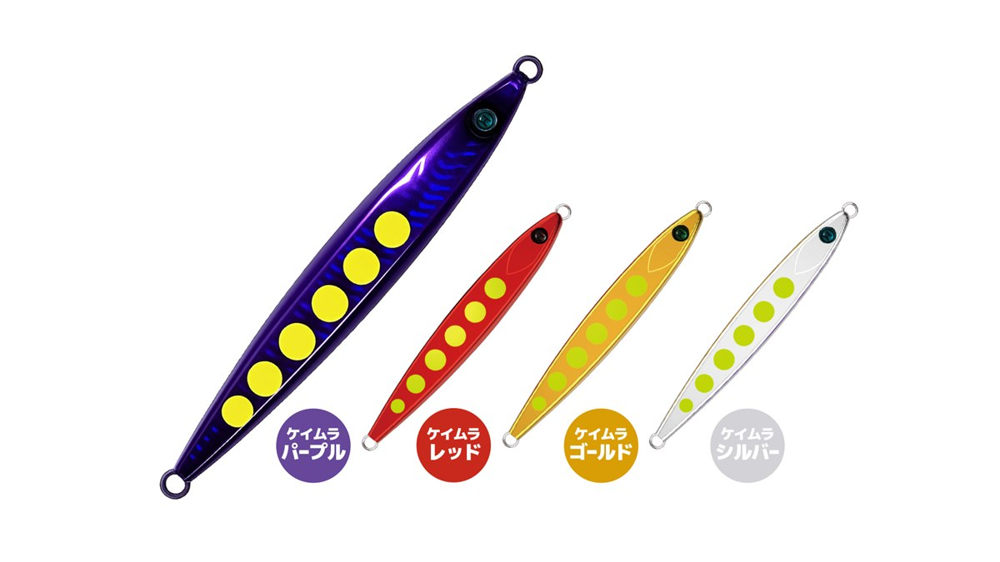
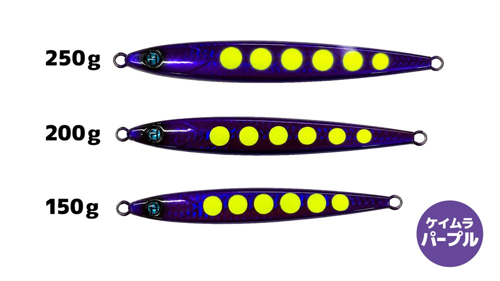
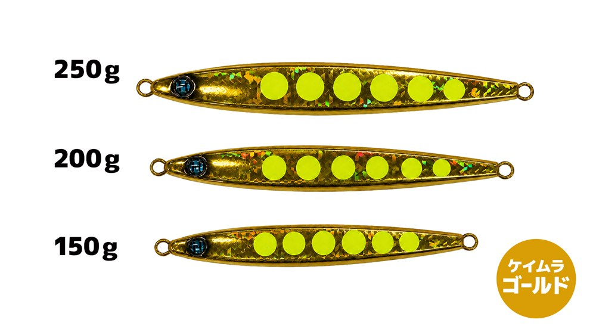
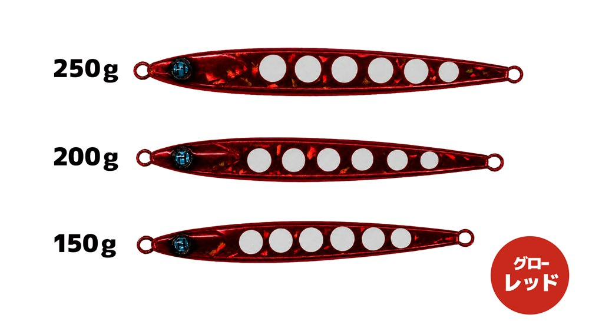
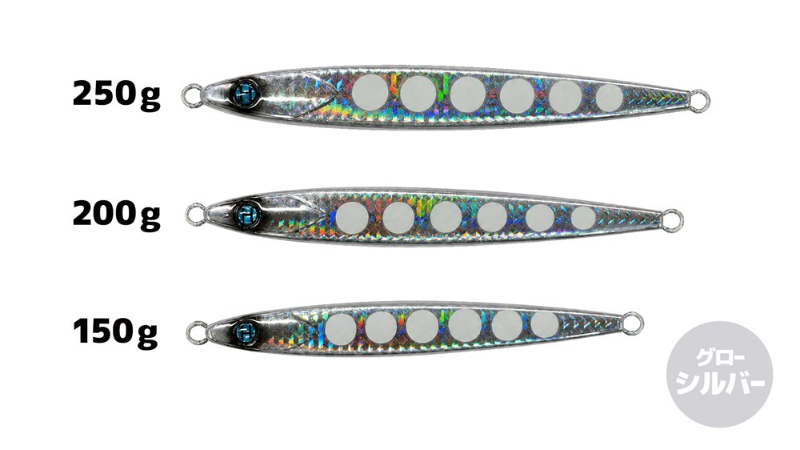
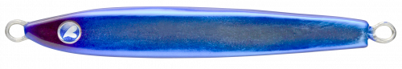

ハピジグ バイブフォール
（Hapyjig VIBE FALL）
ハピジグ バイブフォール（Hapyjig VIBE FALL）はHapyson（ハピソン）のメタルジグ（タチウオジギング）です。
揺れながら素早く落ちる、フォールで魅せるメタルジグ。主なターゲットはタチウオです。
フォール性能にこだわった、コスパのいいメタルジグ「ハピジグ」シリーズの1本。小刻みに揺れながら素早く沈み、魚のいるレンジへ効率よく届けられます。テンションをかけると垂直に落ちるので、タチウオの鋭いアタリも捉えやすくなっています。

画像出典:Hapyson公式HP
スペック
- メーカー
- Hapyson（ハピソン）
- タイプ
- メタルジグ（センターバランス）
- 重さ
- 150g／200g／250g
- サイズ
- 150g：18×137×11mm／200g：20×148×20mm／250g：18×160×13mm
- カラー
- ケイムラ4色・グロー4色（パープル・ゴールド・シルバー・レッド）
- ターゲット
- タチウオなど
- 価格
- 1,320円（150g）／1,460円（200g）／1,540円（250g）（税込）
▼今すぐチェック

ハピジグ バイブフォールの特徴
小刻みに揺れながら素早く落ちる、フォール特化設計
-
揺れながら素早くフォール
センターバランス設計と太めのボディ形状で、小刻みに揺れながら素早く沈む独特のフォールアクション。魚のいるレンジへ効率よくアプローチできる。
-
テンションをかけると垂直に落ちる
ラインにテンションをかけると垂直に落ちるので、フォール中のタチウオの鋭いアタリも捉えやすい。
-
ケイムラとグローの各4色
パープル・ゴールド・シルバー・レッドの4色を、ケイムラとグローでそれぞれラインナップ。深場や朝夕の暗い時間でもアピールできる。
ハピジグ バイブフォールの使い方
基本はフォールで誘うジギングです。着底させたら、ワンピッチジャークやただ巻きで誘い上げ、止めてフォールを入れながら探ります。
アタリはフォール中に出ることが多いので、ラインに軽くテンションをかけて垂直に落とし、ラインの動きや重みの変化に集中しましょう。
ハピジグ バイブフォールの得意な状況
船からのタチウオジギングが得意です。
フォールで誘うジグなので、タチウオ以外にも、フォールに反応する魚を狙う時に使えます。
ワンポイント
水深や潮の速さで重さを選びます。浅い場所や潮が緩い時は150g、深場や潮が速い時は200g・250gと、底が取れる重さを選びましょう。
バイブフォールのサイズの使い分け
| 型番 | 重さ | サイズ（高さ×長さ×幅） | 価格（税込） |
|---|---|---|---|
| YT-15BF | 150g | 18×137×11mm | 1,320円 |
| YT-20BF | 200g | 20×148×20mm | 1,460円 |
| YT-25BF | 250g | 18×160×13mm | 1,540円 |
※数値は公式ページより。
オススメカラー
バイブフォールは、ケイムラ4色・グロー4色の全8色（各サイズ共通）。そのうち4色を紹介します（画像は公式より）。

ケイムラ パープルタチウオの定番、パープル系。まず1つ選ぶならこの色。

ケイムラ ゴールドゴールドのフラッシングで、濁りの日や朝夕に。

グロー レッド赤系にグロー。深場や暗い時間に。

グロー シルバーシルバーのナチュラル系にグロー。
画像出典:Hapyson公式HP
ハピジグ バイブフォールに似ているルアー
-
 ジャックアイマキマキ
ハヤブサ
詳細はこちら＞
ジャックアイマキマキ
ハヤブサ
詳細はこちら＞
ただ巻き専用のブレードジグ。
-

フォルテン ブルーブルー 詳細はこちら＞テールヘビーのメタルジグ。
-
 ビッグバッカー Eブレード
ジャッカル
詳細はこちら＞
ビッグバッカー Eブレード
ジャッカル
詳細はこちら＞
ブレードジグ。